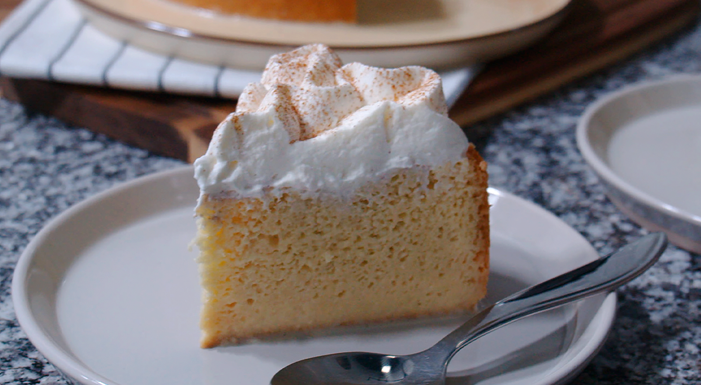

Inicio
Torta de Tres Leches

Descripción
La Torta de Tres Leches es un postre espectacular que redefine el concepto de "bizcocho húmedo". Consiste en un pan esponjoso tradicional (bizcochuelo) que, tras ser horneado, se pincha por todas partes y se baña por completo con una mezcla de tres tipos de leche: evaporada, condensada y crema de leche.
Lo mágico de este postre es que el bizcocho actúa como una esponja perfecta: absorbe todo el líquido sin deshacerse ni volverse mazacote, manteniendo una textura aireada, jugosa y fría. Se corona tradicionalmente con una capa de merengue y un toque de canela, logrando un equilibrio perfecto entre lo dulce, lo cremoso y lo refrescante.
Ingredientes
Para el bizcochuelo (la base esponjosa):
- 4 huevos (separadas las claras de las yemas)
- 1 taza de azúcar
- 1 taza de harina de trigo común (tamizada)
- 1 cucharadita de esencia de vainilla
- 1 cucharadita de polvo para hornear
- Apenas una pizca de sal
Para la mezcla de tres leches:
- 1 lata (400 g) de leche condensada
- 1 lata (400 g) de leche evaporada
- 1 taza (250 ml) de crema de leche (media crema)
Para la cubierta:
- Merengue (puedes batir 2 claras a punto de nieve con media taza de azúcar) o crema chantilly al gusto.
- Canela en polvo para decorar.
Preparación
- Prepara el bizcochuelo: Precalienta el horno a 180 °C y engrasa un molde para hornear.
- Bate a punto de nieve: En un bol, bate las claras de huevo con la mitad del azúcar hasta que formen picos firmes. Reserva.
- Bate las yemas: En otro bol, bate las yemas con el resto del azúcar y la vainilla hasta que cambien a un color amarillo pálido y se vean cremosas.
- Integra los secos: Agrega la harina, el polvo de hornear y la pizca de sal a la mezcla de yemas. Incorpora poco a poco.
- Añade las claras: Agrega las claras a punto de nieve a la mezcla anterior en tres partes, haciendo movimientos envolventes muy suaves con una espátula para que no se pierda el aire.
- Hornea: Vierte la masa en el molde y hornea durante 25 a 30 minutos (o hasta que al introducir un palillo, este salga limpio). Saca del horno y deja enfriar por completo.
- El baño de tres leches: Mientras se enfría el bizcocho, licúa o mezcla muy bien la leche condensada, la leche evaporada y la crema de leche.
- La magia: Con un tenedor o un palillo, pincha toda la superficie del bizcocho frío (¡no dejes un centímetro sin pinchar!). Vierte la mezcla de las tres leches poco a poco por encima, asegurándote de que los bordes también queden bien empapados.
- Nevera y decoración: Cubre el molde y llévalo a la nevera por un mínimo de 4 horas (si es de un día para otro, queda el triple de buena). Antes de servir, decórala con el merengue o chantilly y espolvorea canela al gusto.